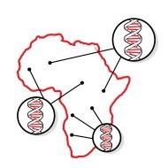
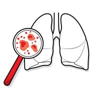
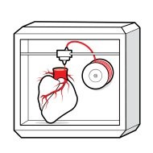

Major health care and medical innovations around the world.
|
|
1.David Abney: Drone-delivered medical supplies
|
|
|
Since March, UPS has
been conducting a trial program called
Flight Forward, using autonomous drone
deliveries of critical medical samples
including blood or tissue between two
branches of a hospital in Raleigh, N.C.,
located 150 yards apart. A fleet-footed
runner could cover the distance almost as
fast as the drones, but as a
proof-of-concept program, it succeeded,
and in October the FAA granted the company
approval to expand to 20 hospitals around
the U.S. over the next two years.
“We expect UPS Flight Forward to one day
be a very significant part of our company,”
says UPS CEO David Abney of the service,
which will deliver urine, blood and tissue
samples, and medical essentials like drugs
and transfusable blood. UPS is not alone
in pioneering air deliveries. Wing,
a division of Google’s parent company
Alphabet, received similar, but more
limited, FAA approval to make deliveries
for both Walgreens and FedEx.
And in Ghana and Rwanda,
drones operated by Silicon Valley
start up Zipline are already delivering
medical supplies to rural villages
. —Jeffrey Kluger.
|
|
|
|
|
2.Abasi Ene-Obong: A more diverse global bio bank
|
|
|
A major limitation
threatens to hamper the era of personalized
medicine: people of Caucasian descent are
a minority in the global population yet
make up nearly 80% of the subjects in
human-genome research, creating blind
spots in drug research. DR. Abasi Ene
obang, 34, founded 54gene to change that.
Named for Africa’s 54 countries, the
Nigeria-based start up is sourcing genetic
material from volunteers across the
continent, to make drug research and
development more equitable. 54gene is
conscious of the ugly history of colonial
exploitation in Africa. If companies are
going to profit by developing marketable
drugs based on the DNA of African people,
Africa should benefit: so, when partnering
with companies, 54gene prioritizes those
that commit to including African countries
in marketing plans for any resulting drugs.
“If we are part of the pathway for drug
creation, then maybe we can also become
part of the pathway to get these drugs
into Africa,” Ene-Obong says
—Corinne Purtill.
|
|
|

|
|
3.Sean Parker: A disruptive approach to cancer research
|
|
|
One of the original
disrupters of the new economy is bringing
his approach to medical research. The Parker
Institute for Cancer Immunotherapy,
established by Napster co-founder and
former Facebook president Sean Parker, is
a network of top institutions including
Memorial Sloan Kettering, Stanford, the
MD Anderson Cancer Center and more. Its
goal is to identify and remove obstacles
to innovation in traditional research. For
example, all of the participating institutes
have agreed to accept an approval
decision by any of their respective
Institutional Review Boards, which “allows
us to get major clinical trials off the
ground in weeks rather than years,” says
Parker, and at lower costs. Perhaps most
important, Parker wants to infuse the
project with his market sensibility: “We
follow the discoveries coming from our
researchers and then put our money behind
commercializing them,” he says, either
by licensing a product or spinning it
out into a company. Since its founding
in 2016, the institute has brought 11
projects to clinical trials and
supported some 2,000 research papers.
|
|
|
|
|
4.Thomas Reardon: A wristband that can read your mind
|
|
|
A man
wearing what looks like a chunky black
wristwatch stares at a tiny digital dinosaur
leaping over obstacles on a computer screen
before him. The man’s hands are motionless,
but he’s controlling the dinosaur—with
his brain. The device on his wrist is the
CTRL-kit, which detects the electrical
impulses that travel from the motor neurons
down the arm muscles and to the hand
almost as soon as a person thinks about
a particular movement. “I want machines
to do what we want them to do, and I want
us to not be enslaved by the machines,”
says Thomas Reardon, CEO and co-founder
of CTRL-Labs, the device maker. The
hunched-over posture and fumbling
keystrokes of the smartphone era
represent “a step backward for humanity,”
says Reardon, a neuroscientist who, in a
past life, led the development of
Microsoft’s Internet Explorer. The
technology could open up new forms of
rehabilitation and access for patients
recovering from a stroke or amputation,
as well as those with Parkinson’s disease,
multiple sclerosis and other
neurodegenerative conditions,
Reardon says —Corinne Purtill.
|
|
|
|
|
5.Shravya Shetty: Cancer-diagnosing artificial intelligence
|
|
|
Symptoms of lung cancer usually don’t appear
until its later stages, when it’s difficult
to treat. Early screening of high-risk
populations with CT scans can reduce the
risk of dying, but it comes with risks of
its own. The U.S. National Institutes of
Health found that 2.5% of patients who
received CT scans later endured needlessly
invasive treatments—-sometimes with fatal
results—after radiologists erroneously
diagnosed false positives. Shravya Shetty
believes artificial intelligence may be
the solution. Shetty is the research lead
of a Google Health team that in the past
two years built an AI system that
outperforms human radiologists in
diagnosing lung cancer. After being
trained on more than 45,000 patient
CT scans, Google’s algorithm detected
5% more cancer cases and had 11% fewer
false positives than a control group of
six human radiologists. The early results
are promising, but “there’s a pretty big
gap between where things are and where they
could be,” says Shetty. “It’s that potential
impact that keeps me going.”— Corinne Purtill.
|
|
|

|
|
6.Charles Taylor: 3-D digital hearts
|
|
|
For
too many people with suspected heart
problems, invasive catheterization is
necessary to diagnose blocked or narrowed
arteries. Doctors must then choose the best
method for improving blood flow from a
handful of options, including balloon
angioplasty and stenting. Charles Taylor,
a former Stanford professor, started Heart
Flow to help patients avoid invasive
diagnostic procedures and improve treatment
outcomes. The company’s system creates
personalized 3-D models that can be rotated
and zoomed into, so doctors can simulate
various approaches on screens. In some
cases, it can help avoid invasive procedures
entirely. “By adding the Heart flow… to our
available resources for diagnosing stable
coronary disease, we are able to provide
patients with better care as we evaluate
risk,” said Duke University cardiologist
Manesh Patel, at the American College of
Cardiology’s annual meeting in March.
—Jeffrey Kluger.
|
|
|

|